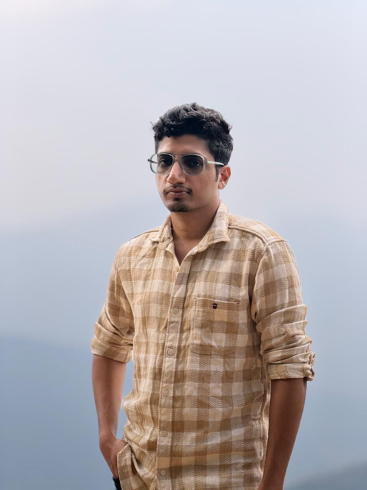
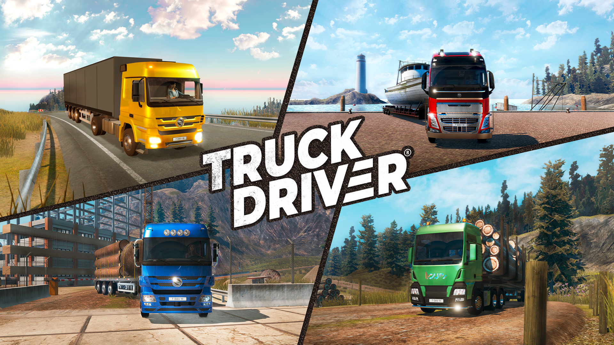
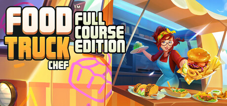
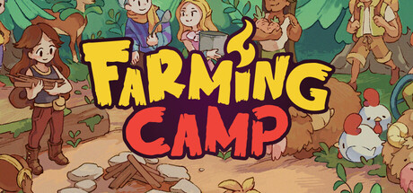
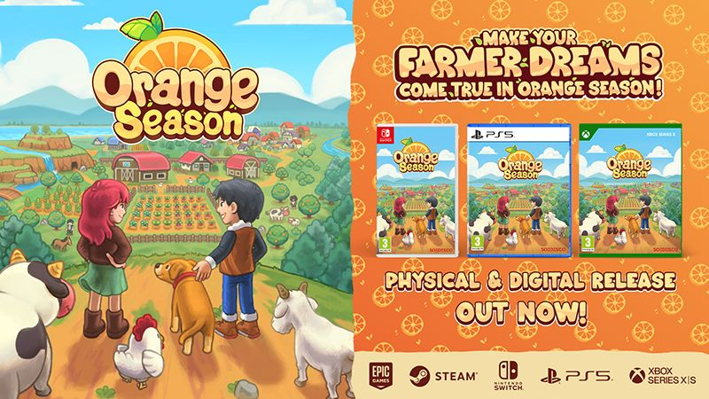
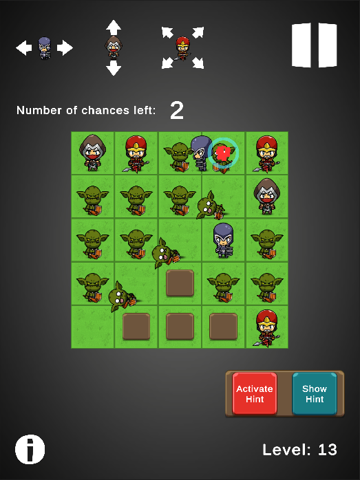
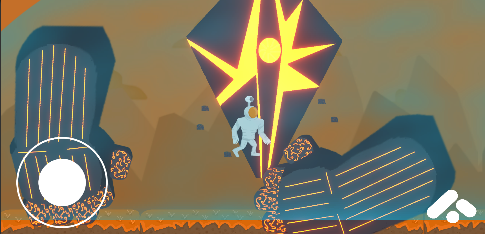
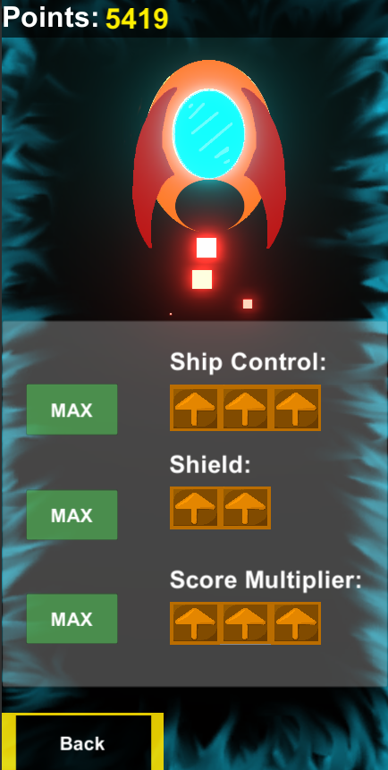

5+ years building games — from live-ops mobile ports to original indie titles with custom systems and mechanics.
See My WorkI am a Lead Senior Unity Developer with over five years of professional experience in cross-platform game development across PC, Console, and Mobile. I have specialized in gameplay systems architecture, console porting, multiplayer integration, and backend services — contributing across the full development lifecycle from prototype to release. I have worked both independently and as a technical lead on small teams, owning core systems and driving scalable, performance-focused implementations.

A truck simulation game with story and missions. Served as lead on porting from Steam to mobile, building full live-ops infrastructure and shipping bug fixes across PC, Xbox, and PS4.
Click to view details →
Led the full port of this cooking management game from mobile to Steam (PC, Mac, Steam Deck) and Nintendo Switch.
Click to view details →
Led the port of this cozy farming game from PC to Nintendo Switch, PS5, and Xbox.
Click to view details →
Contributed bug fixes to the original farming RPG and currently leading development of Orange Season 2 as architect and lead developer.
Click to view details →
A grid-based puzzle game with custom level generation. Every level is solvable in a single tap — built and designed solo.
Click to view details →
A platformer shooter where every level ends with a unique boss whose mechanics you must discover. Built solo.
Click to view details →
A top-down scroller with a music mechanic and a custom recording mode where your guitar playing becomes a playable level.
Click to view details →Got a project in mind or want to work together?
sagarmahesh13@gmail.com